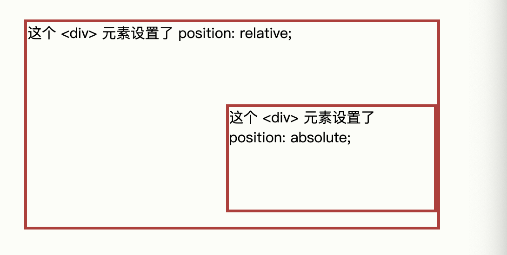

7. CSS 更多
1.CSS 布局
1.1 display属性
display属性是控制布局的最重要的属性
display属性规定是否/如何显示元素
大多数元素的默认display值为block或inline
块级别元素
块级元素总是从新行开始，并占据可用的全部宽度（尽可能向左和向右伸展）。
- div
- h1-h6
- p
- form
- header
- footer
- section
行内元素
内联元素不从新行开始，仅占用所需的宽度
- span
- a
- img
display:none
该属性值通常搭配js使用，用来控制元素的显示和隐藏
默认情况下，script元素使用display:none
覆盖默认的display值
如前所述，每个元素都有一个默认 display 值。但是，您可以覆盖它。
将行内元素更改为块元素，反之亦然，对于使页面以特定方式显示同时仍遵循 Web 标准很有用。
隐藏元素
选择display:none还是visibility:hidden
-
display:none
隐藏元素，并且页面布局会因为元素的消失而发生改变
-
visibility:hidden
元素被隐藏，但是它仍然会占据空间
1.2 width 宽属性
使用 width、max-width 和 margin: auto
块级元素始终占用可用的全部宽度（尽可能向左和向右伸展）
设置块级元素的width属性，防止它延伸到容器的边缘，可以将外边距设置为auto，这样可以使元素在容器中水平居中
div.ex1 {
width: 500px;
margin: auto;
border: 3px solid #73AD21;
}
div.ex2 {
max-width: 500px;
margin: auto;
border: 3px solid #73AD21;
}
1.3 position属性
position属性规定应用元素的定位方法的类型
有五个不同的位置值
- static
- relative
- fixed
- absoulue
- sticky
元素其实是使用 top、bottom、left 和 right 属性定位的。
但是，除非首先设置了 position 属性，否则这些属性将不起作用。根据不同的 position 值，它们的工作方式也不同。
position：static
HTML元素默认情况下的定位方式为static静态
静态定位的元素不受top、bottom、left 和 right 属性的影响。
div.static {
position: static;
border: 3px solid #73AD21;
}
position:relative
相对性，设置改属性的元素相对于其正常位置进行定位
设置相对定位的元素的 top、right、bottom 和 left 属性将导致其偏离其正常位置进行调整。
不会对其余内容进行调整来适应元素留下的任何空间。
div.relative {
position: relative;
left: 30px;
border: 3px solid #73AD21;
}
position:fixed
设置该属性的元素是相对于视口定位的，滚动页面，位置不变
top、right、bottom 和 left 属性用于定位此元素。
div.fixed {
position: fixed;
bottom: 0;
right: 0;
width: 300px;
border: 3px solid #73AD21;
}
position：absolute
position：absolute的元素相对于最近的定位祖先元素进行定位（而不是相对于视口定位，如 fixed）。
然而，如果绝对定位的元素没有祖先，它将使用文档主体（body），并随页面滚动一起移动。
“被定位的”元素是其位置除 static 以外的任何元素。

div.relative {
position: relative;
width: 400px;
height: 200px;
border: 3px solid #73AD21;
}
div.absolute {
position: absolute;
top: 80px;
right: 0;
width: 200px;
height: 100px;
border: 3px solid #73AD21;
}
重叠元素
在对元素进行定位时，它们可以与其他元素重叠。
z-index 属性指定元素的堆栈顺序（哪个元素应放置在其他元素的前面或后面）。
元素可以设置正或负的堆叠顺序：
img {
position: absolute;
left: 0px;
top: 0px;
z-index: -1;
}
1.4 溢出
CSS overflow属性控制对与太大而无法完全显示的内容进行处理
该属性可以设置以下的值
-
visible
默认，溢出不进行裁剪，内容在元素框外渲染
-
hidden
溢出被裁剪，其余内容将不可见
-
scroll
溢出裁剪，可以通过滚动条查看其余内容
-
auto
与scroll类似，仅在必要时添加滚动条
div {
overflow: hidden;
}
1.5 浮动
CSS float 属性规定元素如何浮动
CSS clear属性规定哪些元素可以在清除的元素旁边以及哪一侧浮动
float 属性可以设置以下值之一：
- left - 元素浮动到其容器的左侧
- right - 元素浮动在其容器的右侧
- none - 元素不会浮动（将显示在文本中刚出现的位置）。默认值。
- inherit - 元素继承其父级的 float 值
最简单的用法是，float 属性可实现（报纸上）文字包围图片的效果。
clear 属性指定哪些元素可以浮动于被清除元素的旁边以及哪一侧。
clear 属性可设置以下值之一：
- none - 允许两侧都有浮动元素。默认值
- left - 左侧不允许浮动元素
- right- 右侧不允许浮动元素
- both - 左侧或右侧均不允许浮动元素
- inherit - 元素继承其父级的 clear 值
clearfix Hack
如果一个元素比包含它的元素高，并且它是浮动的，它将“溢出”到其容器之外：
然后我们可以向包含元素添加 overflow: auto;
.clearfix {
overflow: auto;
}
1.6 display:inline-block
与 display: inline 相比，主要区别在于 display: inline-block 允许在元素上设置宽度和高度。
同样，如果设置了 display: inline-block，将保留上下外边距/内边距，而 display: inline 则不会。
与 display: block 相比，主要区别在于 display：inline-block 在元素之后不添加换行符，因此该元素可以位于其他元素旁边。
1.7 水平&垂直布局
-
居中对齐
要使块元素（例如 div ）水平居中，请使用
margin: auto;
.center {
margin: auto;
width: 50%;
border: 3px solid green;
padding: 20px;
}
-
居中对齐文本
如果仅需在元素内居中文本，请使用
text-align: center;
.center {
text-align: center;
border: 3px solid green;
}
-
左右对齐 - position
对齐元素的一种方法是使用
position: absolute;
.right {
position: absolute;
right: 0px;
width: 300px;
border: 3px solid #73AD21;
padding: 20px;
}
- 左右对齐 - float
.right {
float: right;
width: 300px;
border: 3px solid #73AD21;
padding: 10px;
}
-
垂直对齐 - padding
有很多方法可以在 CSS 中垂直对齐元素。一个简单的解决方案是使用上下内边距：
.center {
padding: 70px 0;
border: 3px solid green;
}
2. CSS 组合器
组合器是解释选择器之间关系的某种机制。
CSS 选择器可以包含多个简单选择器。在简单选择器之间，我们可以包含一个组合器。
CSS 中有四种不同的组合器：
- 后代选择器 (空格)
- 子选择器 (
>) - 相邻兄弟选择器 (
+) - 通用兄弟选择器 (
~)
2.1 后代选择器
后代选择器匹配属于指定元素后代的所有元素。
div p {
background-color: yellow;
}
下面的例子选择 div 元素内的所有 p 元素
2.2 子选择器
子选择器匹配属于指定元素子元素的所有元素。
下面的例子选择属于 div 元素子元素的所有 p 元素：
div > p {
background-color: yellow;
}